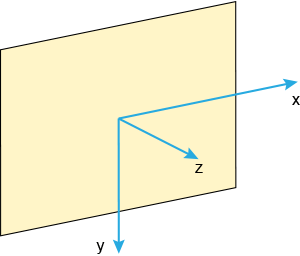
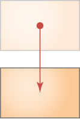
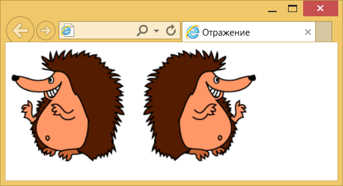
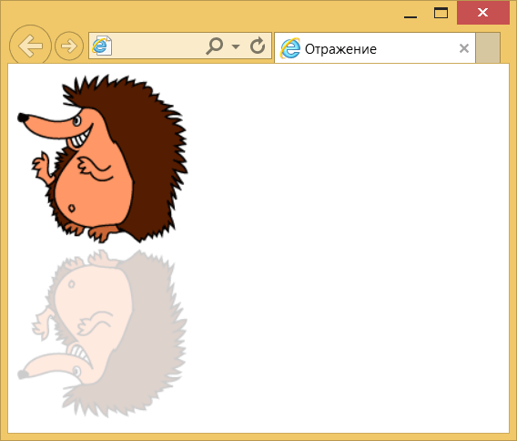
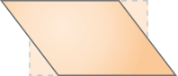
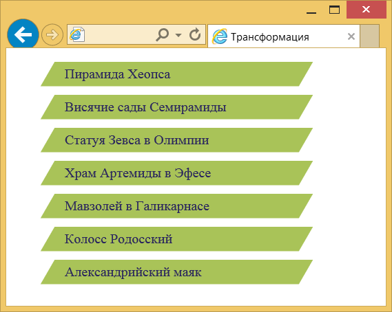
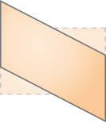

Функции трансформации
Функций трансформаций довольно много и они делятся по следующим группам: поворот, масштабирование, наклон и сдвиг, а также на двумерные и трёхмерные трансформации. Последние обозначаются добавлением 3d к имени функции. Кроме того, с помощью этих трансформаций можно делать отражение элемента, задавая отрицательные значения параметров у некоторых функций. Все функции комбинируются между собой, позволяя тем самым получить множество новых фигур.
Любая трансформация происходит относительно центральной точки элемента, её положение можно задать с помощью свойства transform-origin. Координатные оси показаны на рис. 1; оси X и Y находятся в плоскости экрана, а ось Z ему перпендикулярна.

Рис. 1. Координатные оси
translate()
Сдвигает элемент на заданное значение по горизонтали и вертикали в плоскости экрана.
transform: translate(tx[, ty])Здесь: tx — значение смещения по оси X в пикселях, процентах или других единицах CSS; ty — смещение по оси Y. Если значение ty не указано, то оно считается равным tx: translate(2) соответствует translate(2, 2).
translate3d()
Сдвигает элемент на заданное значение в трёхмерном пространстве.
transform: translate3d(tx, ty, tz)Здесь: tx — смещение по оси X; ty — смещение по оси Y; tz — смещение по оси Z. tz не может указываться в процентах, в этом случае функция игнорируется.
translateX()
Сдвигает элемент по горизонтали на указанное значение. Положительное значение сдвигает вправо, отрицательное влево.
transform: translateX(tx)translateY()
Сдвигает элемент по вертикали на указанное значение. Положительное значение сдвигает вниз, отрицательное вверх.

transform: translateY(ty)translateY(ty) является синонимом translate(0, ty).
translateZ()
Сдвигает элемент по оси Z в трёхмерном пространстве. Положительное значение сдвигает вперёд, отрицательное назад.
transform: translateZ(tz)translateZ(tz) является синонимом translate3d(0, 0, tz).
scale()
Задаёт масштаб элемента по горизонтали и вертикали.
transform: scale(sx[, sy]);Здесь: sx — изменение масштаба по оси X; sy — изменение масштаба по оси Y. Значение больше 1 увеличивает масштаб элемента, меньше 1, наоборот, его уменьшает. Если задано только одно значение, то масштабирование будет происходить пропорционально в обе стороны.
scale3d()
Масштабирует элемент в трёхмерном пространстве.
transform: scale3d(sx, sy, sz)scaleX()
Масштабирует элемент по горизонтали.
transform: scaleX(sx);Значение -1 отражает элемент по горизонтали (пример 1).
Пример 1. Отражение по горизонтали
<!DOCTYPE html>
<html>
<head>
<meta charset="utf-8">
<title>Отражение</title>
<style>
.mirrorX {
transform: scaleX(-1) translateX(-20px);
}
</style>
</head>
<body>
<img src="images/igels.png" alt="">
<img src="images/igels.png" alt="" class="mirrorX">
</body>
</html>scaleX() не только отражает изображение, но и меняет направление координат. Поэтому для сдвига картинки вправо применяется отрицательное значение в функции translateX() (рис. 1).

Рис. 1. Отражение картинки по горизонтали
scaleY()
Масштабирует элемент по вертикали.
transform: scaleY(sy);Значение -1 отражает элемент по вертикали (пример 2).
Пример 2. Отражение по вертикали
<!DOCTYPE html>
<html>
<head>
<meta charset="utf-8">
<title>Отражение</title>
<style>
.mirrorY {
transform: scaleY(-1); /* Отражаем по вертикали */
opacity: 0.2; /* Полупрозрачность */
}
</style>
</head>
<body>
<img src="images/igels.png" alt="">
<img src="images/igels.png" alt="" class="mirrorY">
</body>
</html>Результат данного примера показан на рис. 2.

Рис. 2. Отражение картинки по вертикали
scaleZ()
Масштабирует элемент по оси Z.
transform: scaleZ(sz);scaleZ(sz) является синонимом scale3d(1, 1, sz).
rotate()
Поворачивает элемент на заданный угол относительно точки трансформации, задаваемой свойством transform-origin.
transform: rotate(α)Здесь: α — угол поворота. Положительное значение поворачивает элемент по часовой стрелке, отрицательное против.
rotate3d()
Поворачивает элемент в трёхмерном пространстве без искажений. Вращающийся элемент имеет три степени свободы — оси X, Y и Z, относительно которых происходит поворот. Они задаются с помощью вектора [x, y, z] с учётом точки вращения.
transform: rotate3d(x, y, z, α)Здесь: x — целое число описывающее координату X вектора оси вращения; y — целое число описывающее Y-координату вектора оси вращения; z — целое число описывающее координату Z вектора оси вращения; α — угол поворота. Положительное значение угла поворачивает элемент по часовой стрелке, отрицательное против.
rotateX()
Поворачивает элемент вокруг оси X на заданный угол α.
transform: rotateX(α)rotateX(α) является синонимом rotate3D(1, 0, 0, α).
rotateY()
Поворачивает элемент вокруг оси Y на заданный угол α.
transform: rotateY(α)rotateY(α) является синонимом rotate3D(0, 1, 0, α).
rotateZ()
Поворачивает элемент вокруг оси Z на заданный угол α.
transform: rotateZ(α)rotateZ(α) является синонимом rotate3D(0, 0, 1, α).
skew()
Наклоняет элемент на заданное значение по горизонтали и вертикали в плоскости экрана.
transform: skew(ax[, ay])Здесь: ax — угол наклона по оси X; ay — угол наклона по оси Y. Если значение ay не указано, то оно считается равным ax: skew(30deg) соответствует skew(30deg, 30deg).
skewX()
Наклоняет элемент на заданный угол по горизонтали. Положительное значение наклоняет влево, отрицательное вправо.

transform: skewX(α)Здесь: α — угол наклона по оси X. В примере 3 показано создание наклонного меню с помощью функции skewX().
Пример 3. Использование skewX()
<!DOCTYPE html>
<html>
<head>
<meta charset="utf-8">
<title>Трансформация</title>
<style>
li {
background: #a9c358; /* Цвет фона */
list-style: none; /* Убираем маркеры */
width: 300px; /* Ширина списка */
margin-bottom: 10px; /* Отступ снизу */
transform: skewX(-30deg); /* Наклоняем вправо */
}
li a {
color: #2c285d; /* Цвет ссылок */
text-decoration: none; /* Убираем подчёркивание */
display: block; /* Блочные ссылки */
padding: 5px 20px; /* Поля */
transform: skewX(30deg); /* Наклоняем ссылки обратно */
}
</style>
</head>
<body>
<ul>
<li><a href="#">Пирамида Хеопса</a></li>
<li><a href="#">Висячие сады Семирамиды</a></li>
<li><a href="#">Статуя Зевса в Олимпии</a></li>
<li><a href="#">Храм Артемиды в Эфесе</a></li>
<li><a href="#">Мавзолей в Галикарнасе</a></li>
<li><a href="#">Колосс Родосский</a></li>
<li><a href="#">Александрийский маяк</a></li>
</ul>
</body>
</html>Результат данного примера показан на рис. 3. Поскольку трансформация действует на содержимое всего элемента, то ссылки внутри <li> тоже окажутся под наклоном. Нам это не требуется, поэтому ещё раз применяем функцию skewX() для <a>, но уже с противоположным знаком.

Рис. 3. Наклон пунктов меню
skewY()
Наклоняет элемент на заданный угол по вертикали.

transform: skewY(α)Здесь: α — угол наклона по оси Y. Положительное значение наклоняет вниз, отрицательное вверх.
perspective()
Функция задаёт степень перспективы элемента в трёхмерном пространстве. Выражается расстоянием по оси Z от плоскости экрана до точки схода на линии горизонта. Чем меньше расстояние в пикселях, тем сильнее выражены искажения и наоборот.
transform: perspective(l)Здесь: l — размер в пикселях или других единицах CSS. Процентная запись неприменима. Если значение равно 0 или отрицательное, то функция не работает.

Все материалы сайта доступны по лицензии Creative Commons «Attribution-NonCommercial» («Атрибуция — Некоммерческое использование») 4.0 Всемирная, если не указано иное.